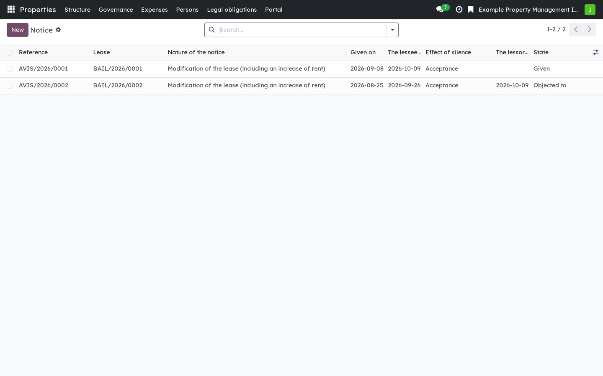
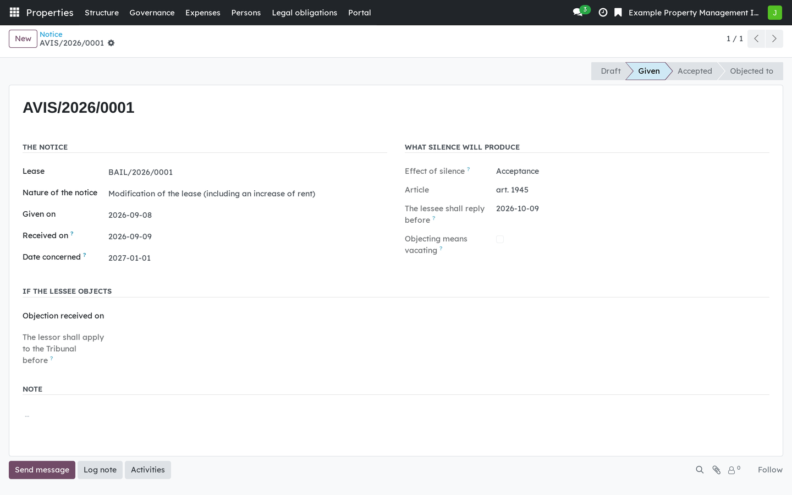
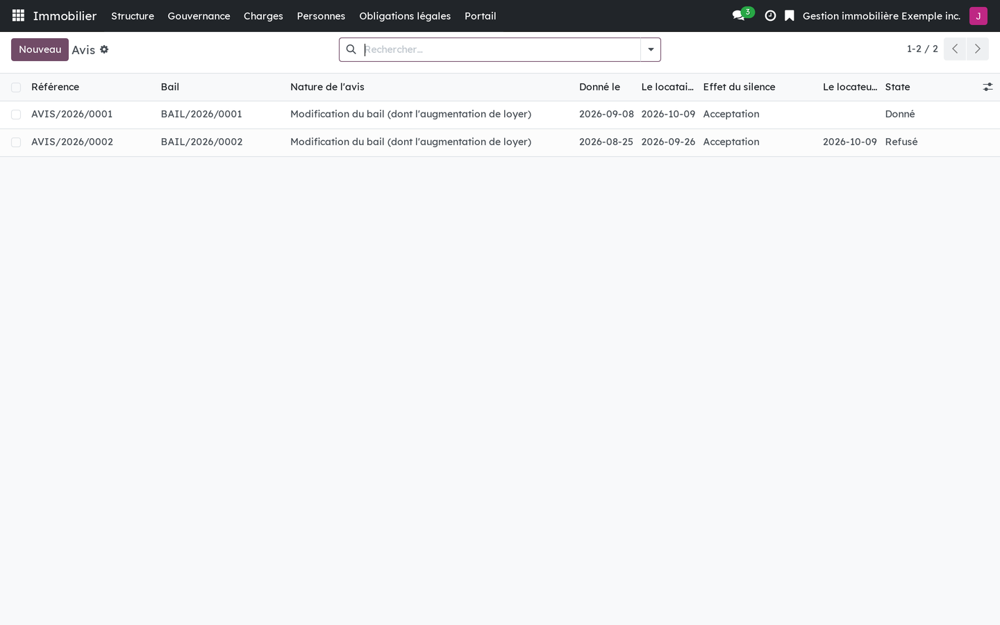
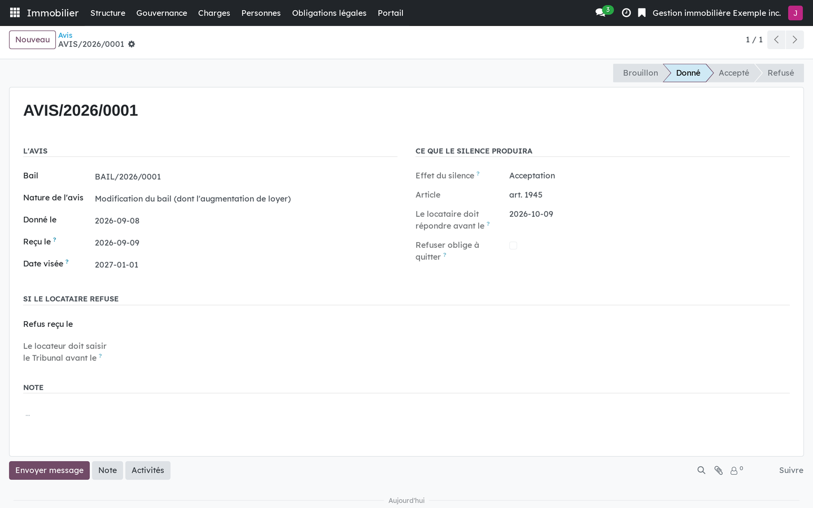

Version française plus bas.
The lease is not reproduced, but notices are: for them the law prescribes the content, not the medium. And no answer does not mean the same thing twice. On a notice of modification of the lease, one month of silence is acceptance (art. 1945 CCQ). On a repossession, an eviction, the end of a lease after more than twelve months of sublease, or an offer of a new lease in a private seniors' residence, the same silence is a refusal. A module that treats "no answer" one way is wrong three times out of four.

Notices with their reply deadline and what silence means for each.

A notice of modification: when it had to be given, when the answer is due, and what silence produces.
Requires Rental: the dwelling lease (bf_rental). Rental: lessee portal
(bf_rental_portal) shows each lessee their notices and their deadlines,
and Rental: privacy bridge (bf_rental_privacy) declares the ground of a
resiliation as a separate purpose in the register of processing activities.
This is software, not legal advice.
Business Source License 1.1. You may use this module in production for your own internal business operations, which include administering immovables that you own or that you are constituted to administer, and letting a person acting on your behalf use your instance for that purpose. Administering immovables for the account of others, or providing the module to third parties as a product or service, whether hosted, managed or resold, requires a separate written agreement with the licensor. Each version converts to LGPL-3.0-or-later on the Change Date stated in the LICENSE file, which sets out the exact terms.
Le bail ne se reproduit pas, mais les avis se produisent : pour eux, le droit prescrit le contenu et non le support. Et l'absence de réponse n'a pas le même effet d'un avis à l'autre. Sur un avis de modification du bail, un mois de silence vaut acceptation (art. 1945 C.c.Q.). Sur une reprise, une éviction, une fin de bail après plus de douze mois de sous-location ou une offre de nouveau bail en résidence privée pour aînés, le même silence vaut refus. Un module qui traiterait « pas de réponse » d'une seule façon se tromperait trois fois sur quatre.

Les avis avec leur échéance de réponse et ce que vaut le silence pour chacun.

Un avis de modification : quand il devait être donné, quand la réponse est due, et ce que produit le silence.
Exige Locatif : le bail de logement (bf_rental). Locatif : portail du
locataire (bf_rental_portal) montre à chaque locataire ses avis et leurs
échéances, et Locatif : pont vie privée (bf_rental_privacy) déclare le
fondement d'une résiliation comme finalité distincte au registre des activités de
traitement.
Ce logiciel ne donne pas d'avis juridique.
Business Source License 1.1. Vous pouvez utiliser ce module en production pour vos propres activités internes, ce qui comprend l'administration des immeubles dont vous êtes propriétaire ou que vous êtes constitué pour administrer, et l'usage de votre instance à cette fin par une personne qui agit pour votre compte. Administrer des immeubles pour le compte d'autrui, ou fournir le module à des tiers comme produit ou service, hébergé, géré ou revendu, exige une entente écrite distincte avec le concédant. Chaque version passe sous LGPL-3.0 ou ultérieure à la date de changement inscrite au fichier LICENSE, qui fait foi.